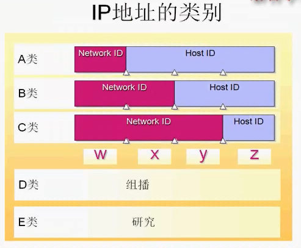
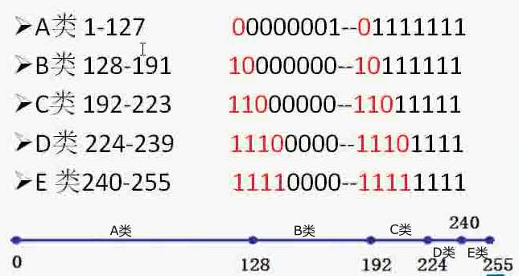
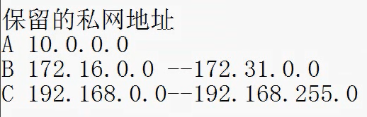

子网掩码和ip地址做与运算可以计算出网络段,如下所示。
ip地址 172. 16.122.204
子网掩码 255.255. 0. 0
网络段 172. 16. 0. 0
172.16是网络段部分,122.204是主机段部分。

需要注意的是,主机段部分在二进制形式下的全为0和全为1的地址是不能用作普通主机地址。
全为0就是表示网段,全为1表示本网段的广播地址(代表所有计算机),所以计算主机段个数的时候记得减2
A类默认子网掩码是255.0.0.0 B类默认是255.255.0.0 C类默认是255.255.255.0
下图是不同IP类型的网络段范围

还有一些公司企业组内网用的地址,这些都是内网地址,互联网访问不到。
